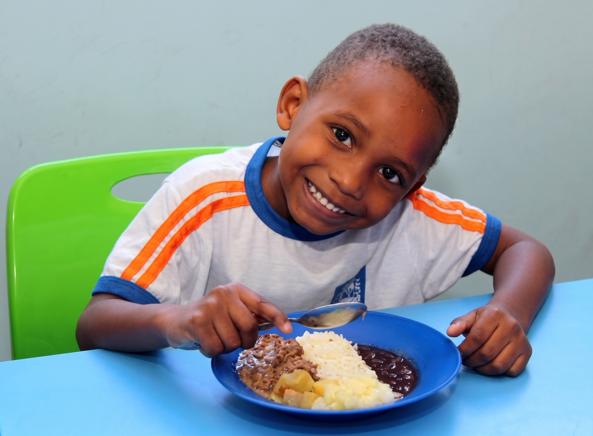
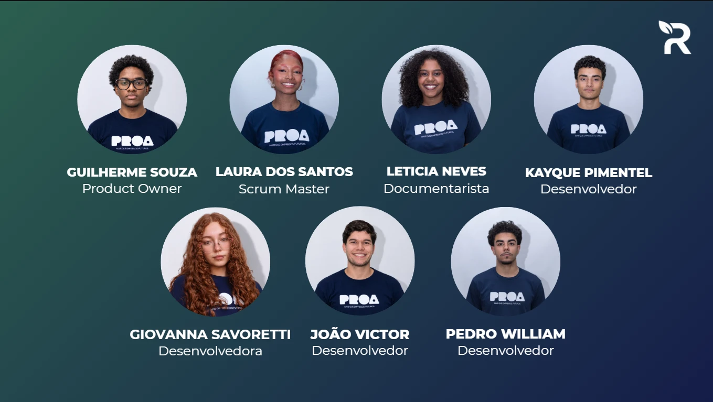

Sem Reali
Informações dispersas
- Estimativas manuais
- Demanda difícil de acompanhar
- Registros em lugares diferentes
Inteligência alimentar escolar
O Reali transforma dados do cotidiano escolar em informações que ajudam instituições a planejar refeições, reduzir desperdícios e tomar decisões mais inteligentes.

O desafio
Todo dia, a escola precisa decidir quantas refeições preparar. Sem dados atualizados sobre presença e demanda, fica mais difícil estimar quem vai comer e ajustar o preparo.
Consolidar registros, acompanhar o movimento e entender tendências também fazem parte desse planejamento.
Sem Reali
Com Reali
O Reali
O Reali integra visão computacional, indicadores operacionais, dashboards e inteligência artificial. Informações de diferentes ambientes da escola chegam a um só lugar para apoiar as equipes responsáveis pela operação e pela gestão.
Como funciona
Visão computacional
O sistema usa imagens para apoiar a contagem quando uma pessoa ou um prato atravessa uma área definida. A leitura é operacional e pode variar conforme o ambiente e a qualidade da captura.
Demonstração técnica · contagem de passagens
O vídeo está indisponível. A contagem registra passagens por uma área de entrada definida.
Demonstração técnica · contagem de pratos servidos
O vídeo está indisponível. A demonstração mostra a contagem de pratos ao cruzarem a área demarcada.
Dashboards e dados
Entradas, refeições e histórico em um painel. A visão por unidade ou por rede depende das permissões do perfil.
Dados ilustrativos
RealInova
A proposta da RealInova é permitir perguntas em linguagem natural sobre os indicadores que cada pessoa pode acessar.
Demonstração com respostas predefinidas
Para quem é
Perfis previstos na proposta. A disponibilidade de recursos depende dos módulos habilitados e das permissões de cada instituição.
Benefícios potenciais
Nossa história
Como a tecnologia pode ajudar escolas a utilizar melhor seus recursos e tornar a alimentação escolar mais inteligente?
Equipe
Conheça quem transforma ideias, tecnologia e propósito em soluções.

Tecnologias
Ferramentas utilizadas ou previstas na arquitetura do projeto.
Privacidade e responsabilidade
Cadastro institucional
Conheça a proposta do Reali e solicite a avaliação de sua instituição para participar da plataforma.
Solicitar cadastro da instituiçãoLink de solicitação pendente de configuração.
O pedido é enviado pelo portal externo e avaliado pela equipe Reali.
A equipe prepara o ambiente e cria o acesso do primeiro administrador ou diretor.
O administrador convida cada pessoa por e-mail com a função correspondente. Cada convidado ativa a conta e define a senha no primeiro acesso.
Perguntas frequentes